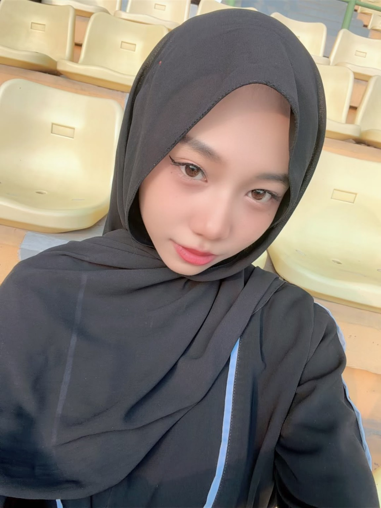
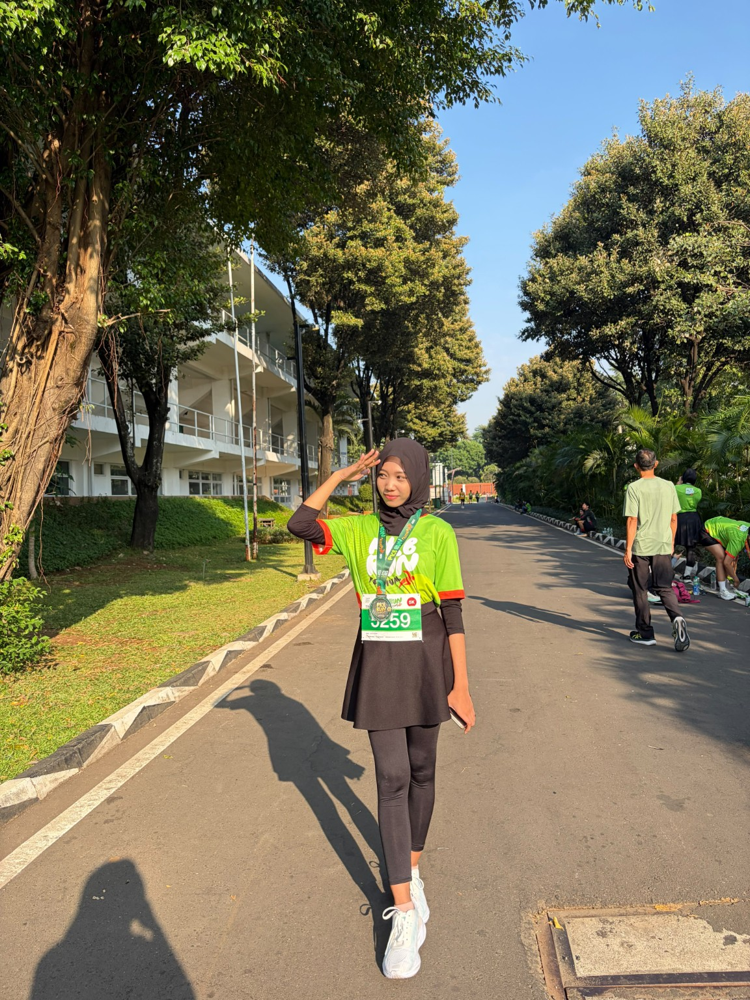
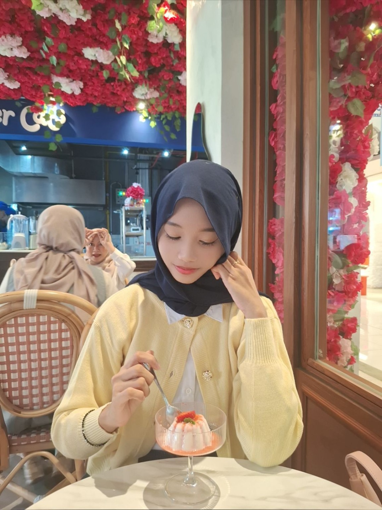
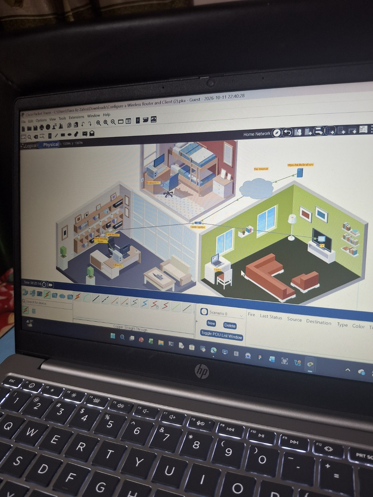
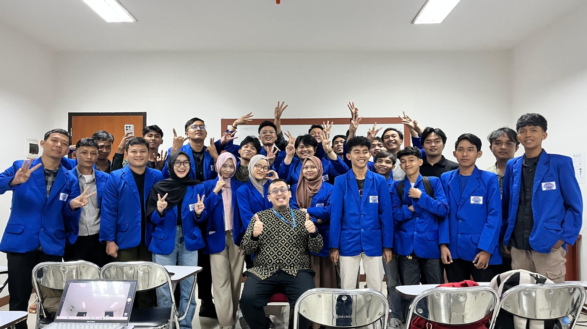
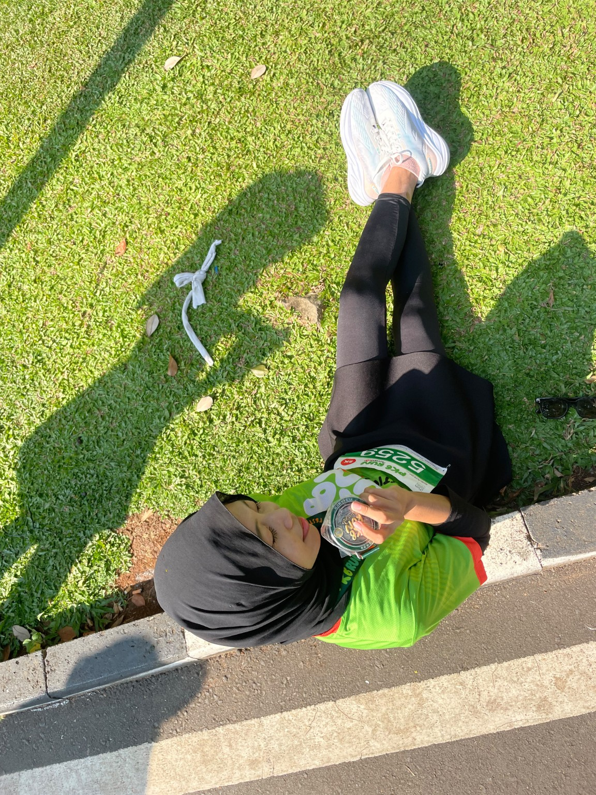
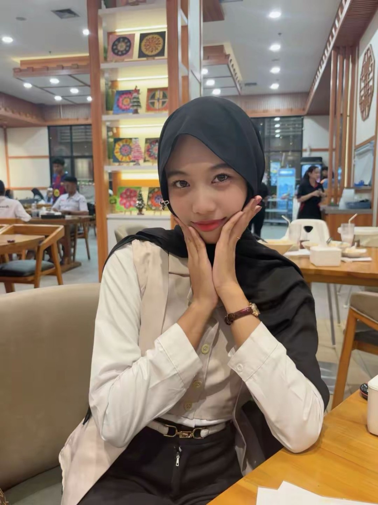
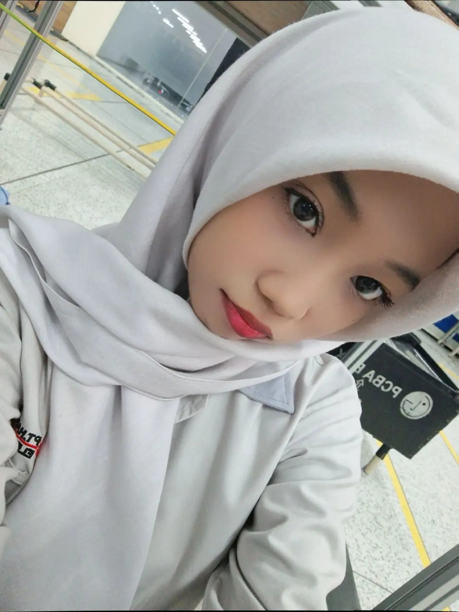
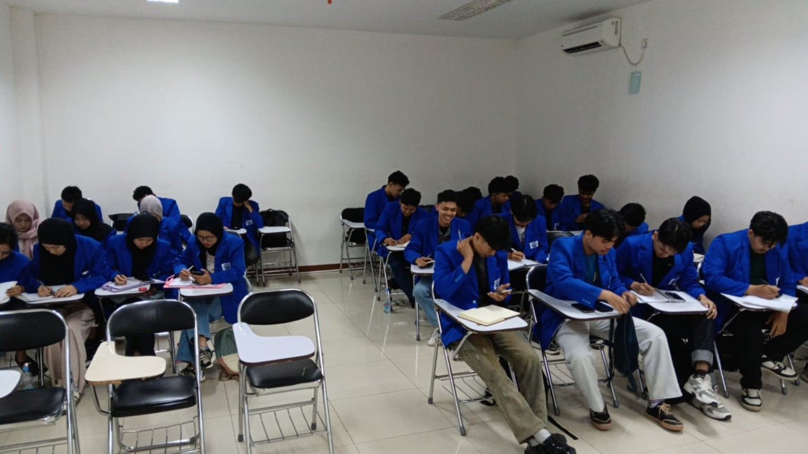

WORK EXPERIENCE
Operator Production
PT Samindo Electronics
Menjalankan pekerjaan produksi seperti assembly, manual insert, dan manual solder dengan memperhatikan ketelitian serta kualitas hasil kerja.
PERSONAL WEBSITE · 2026
Hello, welcome to my space
Mahasiswa Teknik Informatika yang tertarik pada teknologi, pemrograman, dan pengembangan solusi digital.
01 / ABOUT ME

Halo! Saya Tiara Az Zahra.
Saya mahasiswa Teknik Informatika di Universitas Pelita Bangsa. Saya memiliki ketertarikan pada dunia teknologi, khususnya pemrograman, pengembangan website, dan sistem informasi.
Saya senang mempelajari hal-hal baru, mencoba berbagai tantangan, serta mengembangkan kemampuan diri baik secara akademis maupun profesional. Bagi saya, setiap pengalaman merupakan kesempatan untuk belajar dan menjadi lebih baik.
02 / EDUCATION
Perjalanan pendidikan yang menjadi bagian dari proses saya untuk terus berkembang.
| Jenjang | Institusi | Program / Jurusan | Keterangan |
|---|---|---|---|
| 01 | SMKN 2 Cikarang Barat | Otomatisasi Tata Kelola Perkantoran | Lulus |
| 02 | Universitas Pelita Bangsa | Teknik Informatika | Semester 3 · Aktif |
03 / EXPERIENCE
WORK EXPERIENCE
Menjalankan pekerjaan produksi seperti assembly, manual insert, dan manual solder dengan memperhatikan ketelitian serta kualitas hasil kerja.
INTERNSHIP / PKL
Mendapat pengalaman dalam kegiatan administrasi, pengelolaan dokumen, dan pekerjaan pendukung operasional kantor.
WORK EXPERIENCE
Berpengalaman dalam lingkungan kerja produksi dan menjalankan tugas sesuai prosedur perusahaan.
ACHIEVEMENT
04 / SKILLS & INTERESTS
Technical skills
Beberapa kemampuan yang sedang dan terus saya kembangkan.
Tingkat kemampuan merupakan gambaran pribadi dan dapat terus berkembang.
BEYOND THE SCREEN



05 / MULTIMEDIA
Video singkat tentang profil dan perjalanan saya.
GOLDEN HOUR
Instrumental · Personal websitePutar audio jika ingin mendengarkan musik latar.
Catatan: pemutaran audio dimulai setelah tombol Play ditekan oleh pengunjung.
06 / LITTLE MOMENTS





A LITTLE NOTE TO MY FUTURE SELF
Menjadi seorang profesional di bidang teknologi informasi yang memiliki kemampuan, kreativitas, dan wawasan luas dalam mengembangkan solusi digital. Saya ingin terus belajar, meningkatkan kemampuan programming, serta menciptakan teknologi yang bermanfaat dan dapat memberikan dampak positif bagi banyak orang.
07 / CONTACT
Punya pertanyaan atau ingin terhubung? Silakan kirim pesan melalui form ini.
tiaraazzahra333@gmail.com ↗ @tiarazz06_ ↗Universitas Pelita Bangsa · Teknik Informatika